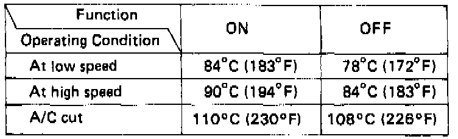

Radiator Cooling Fan Control Module: Description and Operation

FAN CONTROL SYSTEM:
The fan control unit controls the operation of the radiator fan and condenser fan.
It uses inputs from the coolant temperature sensor and A/C pressure switch (A and B) on the A/C system to determine when the fans should run and at what speed.
Additionally the temperature switch shuts down the A/C system if the coolant temperature exceeds 110°C (230°F). If the pressure in the A/C system is higher than normal, pressure switch A closes and the fans run at high speed only. See the A/C section for description and specification of that function.
FAN TIMER SYSTEM:
When the engine oil temperature is above approx. 105°C (221 °F) after the engine is stopped, the condenser fan goes into operation to cool the engine for a maximum of 30 minutes.
When the temperature falls below approx. 90°C (194°F), the fan is stopped.
The fan motor runs at low speed to decrease operating noise by using an in-line resistor.
The oil temperature switch is located on the right cylinder head cover and the fan timer unit is located right kick panel.
If necessary, the fan begins operation 5 seconds after the ignition switch is turned off.